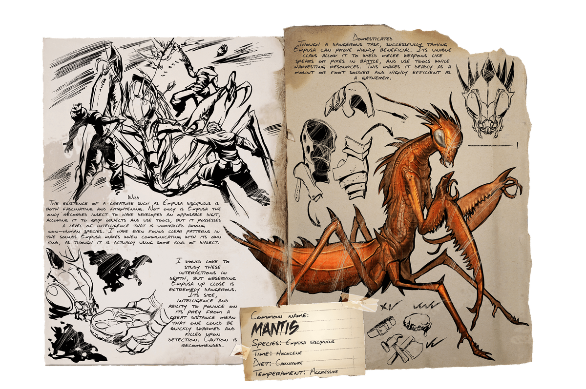

Primera aparición: Temporada 6 - capítulo 3
Tamaño (adulto): Longitud - 3 metros, Altura - 1 metros
Hábitat: CUEVAS DE TODO EL MUNDO
Dieta: Carnívora
Comportamiento: Agresivo
Nivel de amenaza: Alta, evitar si es posible
Nivel de pelea: 430